Pour tous les utilisateurs de l'application : Pasteur, PR, Secrétaire du pasteur, leaders, encadreurs, Faiseurs de Disciples et leaders de cellule.
Version de septembre 2026 · Yaoundé
Sommaire
Ce que contient ce guide
Lisez d'abord la partie 1, qui concerne tout le monde. Ensuite, allez directement à la partie de votre rôle.
1. Premiers pas — tout le mondeOuvrir l'application et se connecterL'installer sur son téléphoneSe repérer dans les menusProfil, mot de passe et notificationsL'annuaireQuand le réseau est faible
2. EncadreurAjouter et suivre ses membresLa fiche de présence de la semaineLes fiches hebdo : photo, image ou saisieLa chaîne de prière (Intercession)
3. Faiseur de Disciples (Suivi)Nouveaux venus et 7 leçonsLa Fiche des Encadreurs
4. LeaderVotre accueil : membres et encadreursValider les fiches, demander une correctionRelancer en un gesteLe rapport mensuel au Pasteur
5. Leader de celluleMembres et fiche de la cellule
6. Pasteur, PR et SecrétaireTableau de bord et objectif d'évangélisationCréer et gérer les comptesDépartements, rapports, journal
7. En cas de problèmeQuestions fréquentes
Qui voit quoi ?
Chacun ne voit que ce qui le concerne : les menus s'adaptent à votre rôle et à votre département. Le serveur vérifie les droits à chaque action : taper une adresse à la main ne donne pas accès à plus.
Pasteur · PR
Secrétaire
Leader
Encadreur
Leader de cellule
Accueil
Toute l'église
Toute l'église
Son équipe
Sa fiche + ses membres
Sa cellule
Leaders · Départements
Tous
Tous (lecture)
Son département
—
—
Annuaire
Toute l'église
Toute l'église
Son département
Ses membres*
—
Nouveaux venus
Tous
Tous (lecture)
Si Suivi / FD*
Si Suivi / FD*
—
Fiches de présence
Toutes
Toutes (lecture)
Son équipe
La sienne
Fiche de cellule
Fiches hebdo (papier)
Toutes
Toutes (lecture)
Son département
Les siennes
Cellule de prière
Rapports (synthèses)
Tous
Tous (lecture)
Son département
—
—
Cellules
Toutes
Toutes (lecture)
—
—
La sienne
Valider les fiches
Oui
—
Son équipe
—
—
Créer des comptes
Oui**
—
—
—
—
Objectif d'évangélisation
Pasteur
—
—
—
—
* FD = départements Faiseurs de Disciples et Suivi : ils voient toute l'église dans l'annuaire, pour vérifier qu'une personne n'est pas déjà suivie ailleurs. ** Seul le Pasteur peut créer un compte PR ou Secrétaire.
Partie 1 · Tout le monde
Premiers pas
Se connecter, installer l'application sur son téléphone et trouver son chemin.
1.1Ouvrir l'application et se connecter
Ouvrez l'adresse https://ssa-suivi-ames-frontend.onrender.com dans le navigateur de votre téléphone (Chrome sur Android, Safari sur iPhone).
Dans Email ou téléphone, tapez votre email ou votre numéro de téléphone. Les espaces ne comptent pas : +237 6 99 11 22 33 et +237699112233 marchent tous les deux.
Tapez votre mot de passe. L'œil à droite permet de voir ce que vous tapez.
Touchez Se connecter. Vous arrivez sur votre page d'accueil.
Pas encore de compte ? Ce n'est pas vous qui le créez. Demandez-le à la PR ou au Pasteur. Vous recevrez soit un mot de passe provisoire (à changer ensuite, voir 1.4), soit un lien d'invitation valable 7 jours où vous choisirez vous-même votre mot de passe.
Mot de passe oublié ? Touchez Mot de passe oublié ? et saisissez votre email : vous recevez un lien pour en choisir un nouveau.
Attention : après 5 mauvais mots de passe d'affilée, le compte est bloqué pendant 15 minutes. C'est une protection : attendez, puis réessayez.
1.2Installer l'application sur son téléphone
Une fois installée, l'application a sa propre icône sur l'écran d'accueil, s'ouvre en plein écran et peut recevoir des notifications. Pas besoin de passer par un magasin d'applications.
Android (Chrome)
iPhone (Safari)
Ouvrez l'adresse de l'application dans Chrome.
Touchez le menu ⋮ en haut à droite.
Choisissez Installer l'application (ou Ajouter à l'écran d'accueil).
Confirmez : l'icône CSP-SSA apparaît.
Ouvrez l'adresse dans Safari (pas un autre navigateur).
Touchez le bouton Partager (carré avec une flèche).
Choisissez Sur l'écran d'accueil, puis Ajouter.
Ouvrez désormais l'application depuis cette icône.
1.3Se repérer
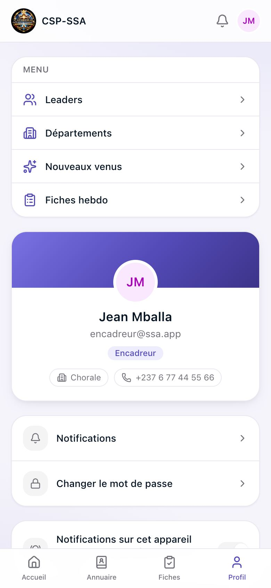
Profil → Menu, sur téléphone
Sur téléphone : les onglets principaux sont en bas de l'écran (Accueil, Annuaire, Fiches, Rapports, Profil, selon votre rôle).
Sur téléphone, les autres pages (Fiches hebdo, Leaders, Départements, Nouveaux venus, Cellules…) sont dans l'onglet Profil, section Menu.
Sur ordinateur : tous les menus sont dans la colonne de gauche.
La cloche, en haut, affiche le nombre de notifications non lues : fiche à rendre, fiche à corriger, fiche à valider…
Votre avatar, en haut à droite, mène à votre profil.
Les éléments visibles dépendent de votre rôle : c'est normal si un collègue voit un menu que vous n'avez pas.
1.4Profil : mot de passe et notifications
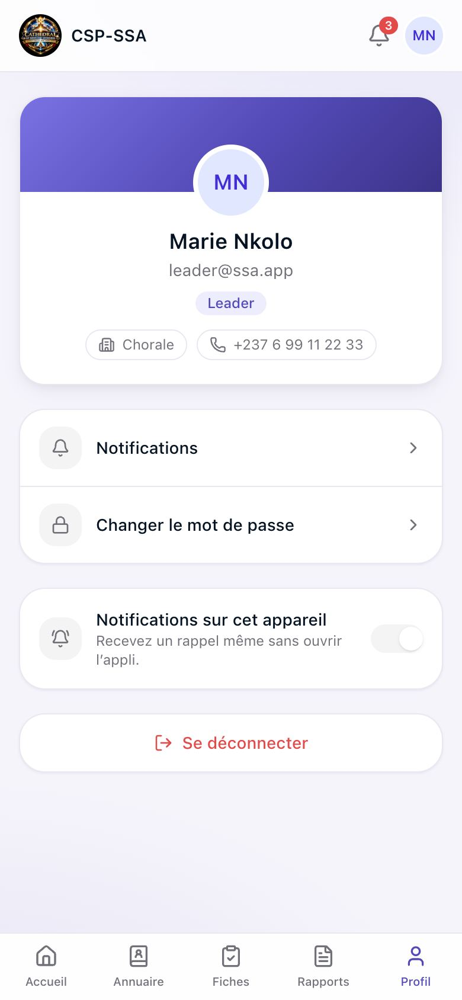
Changer son mot de passe
Ouvrez Profil, puis Changer le mot de passe.
Saisissez l'ancien mot de passe, puis deux fois le nouveau.
Le nouveau doit contenir au moins 8 caractères, dont une majuscule, un chiffre et un caractère spécial (par exemple Grace#2026).
Si vous avez reçu un mot de passe provisoire, changez-le dès votre première connexion.
Recevoir les notifications sur le téléphone
Dans Profil, section Notifications sur cet appareil, activez les notifications.
Acceptez quand le téléphone demande l'autorisation.
Vous serez prévenu même application fermée (fiche à rendre, fiche soumise…).
iPhone : les notifications ne marchent que depuis l'application installée sur l'écran d'accueil (voir 1.2), pas depuis Safari.
1.5L'annuaire
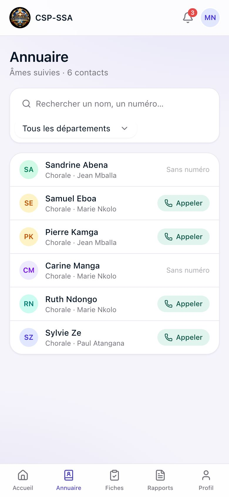
L'annuaire rassemble toutes les personnes suivies. Chacun y voit les personnes qu'il a le droit de voir (tableau « Qui voit quoi ? »).
Rechercher : tapez un nom ou un morceau de numéro dans la barre de recherche.
Filtrer par département avec la liste à droite de la recherche.
Appeler : touchez le bouton vert Appeler, le téléphone compose le numéro.
Sous chaque nom : le département et la personne qui la suit.
1.6Quand le réseau est faible ou coupé
Si vous êtes déjà connecté, l'application s'ouvre quand même, même en mode avion. Vous n'êtes pas déconnecté : les données se chargent dès que le réseau revient.
Si l'écran « Serveur injoignable » apparaît, vérifiez vos données mobiles ou le Wi-Fi, puis touchez Réessayer.
Un enregistrement qui échoue affiche un message en rouge. Rien n'est perdu à l'écran : réessayez quand le réseau revient.
Pour une fiche longue, touchez Enregistrer le brouillon de temps en temps.
Partie 2
Encadreur
Vous suivez un groupe de membres. Chaque semaine, vous remplissez votre fiche de présence et, selon votre département, une fiche hebdo.
2.1Ajouter et suivre ses membres
« Mes membres » sur l'Accueil
Dès l'Accueil, le bloc Mes membres liste les personnes que vous suivez, avec le bouton pour les appeler.
Touchez Ajouter, remplissez Prénom, Nom, Téléphone, Sexe et Zone de résidence, puis Ajouter : la personne vous est rattachée.
Leaders et Faiseurs de Disciples voient en plus Déjà dans l'annuaire ? : cherchez la personne et touchez Rattacher à moi plutôt que de la ressaisir.
Doublon détecté ? Si le numéro existe déjà, l'application affiche « Doublon possible » avec le nom de la personne qui la suit. Touchez Rattacher cette personne à moi. Si elle est suivie par quelqu'un d'une autre équipe, l'application vous le dit : demandez alors à votre leader de vous la rattacher.
Pour modifier ou retirer un membre, utilisez le crayon ou la corbeille à côté de son nom.
2.2La fiche de présence de la semaine
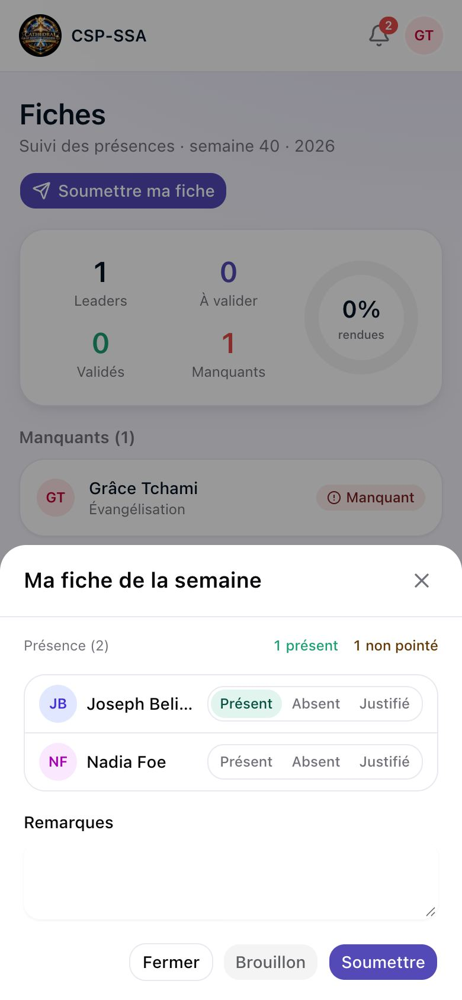
Ici, 1 membre reste à pointer.
Ouvrez l'onglet Fiches, puis touchez Soumettre ma fiche.
Pour chaque membre, touchez Présent, Absent ou Justifié. En haut, le compteur indique combien sont non pointés.
Ajoutez une remarque si besoin.
Touchez Soumettre. Le bouton devient Ma fiche et la fiche attend la validation de votre leader.
Une fiche doit être complète. Elle est refusée si vous n'avez aucun membre (« Aucun membre à pointer ») ou si un membre n'est pas pointé (« Fiche incomplète : 1 membre non pointé »). Pas le temps de finir ? Touchez Brouillon et reprenez plus tard.
Après la soumission
Validée : la fiche affiche « Fiche validée ✅ » et ne se modifie plus.
À corriger : vous recevez une notification « Fiche à corriger ». Ouvrez Ma fiche, lisez le commentaire du leader, corrigez, puis soumettez à nouveau.
Un membre absent deux semaines de suite déclenche une notification « Absences consécutives » : pensez à l'appeler.
2.3Les fiches hebdo (fiches papier du département)
Chaque fiche papier appartient à un département : vous ne voyez que les modèles qui vous concernent. Si votre département n'a pas de fiche papier, le menu Fiches hebdo n'apparaît pas et votre suivi se fait avec la fiche de présence (2.2).
Modèle
Qui le remplit
Rapport d'assiduité (Huissier)
Protocole
Rapport du Faiseur de Disciples · Fiche des Encadreurs
Faiseurs de Disciples, Suivi
Fiche de suivi hebdomadaire des choristes
Chorale
Rapport d'assiduité des ouvriers
Audiovisuel, Sécurité Audiovisuelle
Rapport de la chaîne de prière
Intercession / Prière
Rapport de cellule de prière
Leaders de cellule
Rapport mensuel du leader
Leaders
Ouvrez-les avec le bouton Fiches hebdo de l'onglet Fiches (ou Profil → Menu sur téléphone, colonne de gauche sur ordinateur), puis touchez Nouveau rapport.
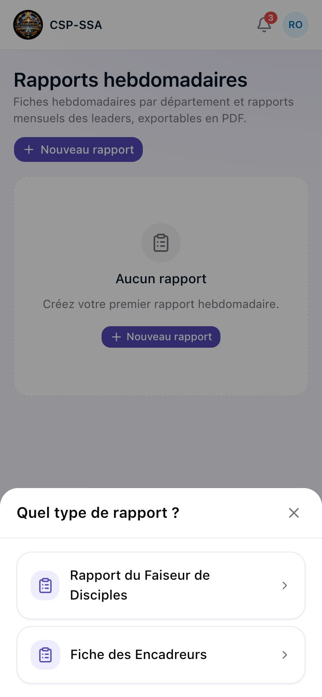
1. Choisir le modèle2. Choisir comment la remplir
Trois façons de remplir une fiche
Prendre une photo de la fiche : l'appareil photo s'ouvre. Photographiez la fiche papier bien à plat, puis touchez Soumettre la fiche.
Importer une image : choisissez une ou plusieurs photos déjà dans la galerie (utile si la fiche a plusieurs pages).
Remplir manuellement : saisissez la fiche à l'écran. Votre nom et la liste de vos membres sont déjà remplis. Reprendre la liste de la semaine dernière recopie les noms de la fiche précédente.
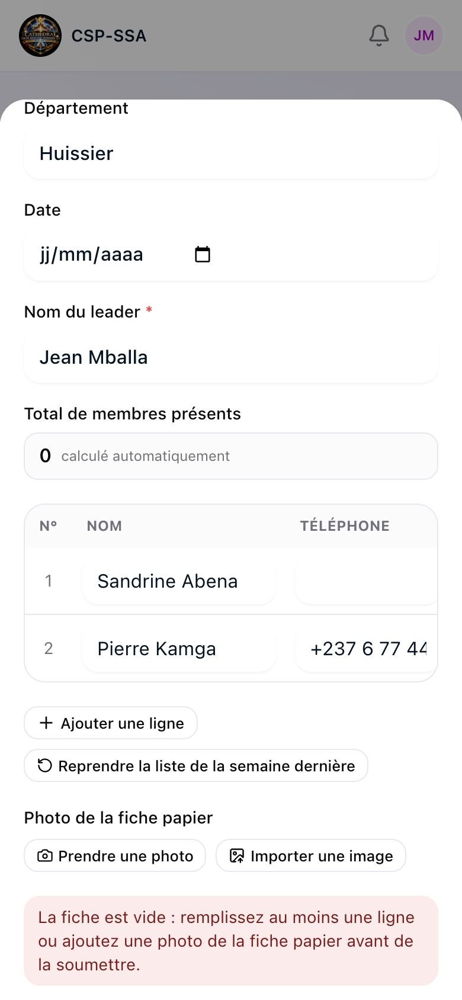
La fiche vide est refusée.
Une fiche vide est refusée. Les noms pré-remplis ne comptent pas. Il faut au moins une information de la semaine (une présence cochée, une leçon, une remarque…) ou une photo de la fiche papier. Sinon, le message « La fiche est vide » s'affiche et rien n'est envoyé.
Enregistrer le brouillon garde la fiche sans l'envoyer.
Télécharger le PDF produit la fiche au format papier officiel, prête à imprimer ou à envoyer.
Un numéro peut s'écrire +237 6 90 60 77 13 ou 690 60 77 13 (parent).
Dans la liste de vos fiches, les trois boutons servent à télécharger, modifier et supprimer.
Exemple : la fiche des choristes
Elle reprend la fiche papier : pour chaque jour, cochez Bible et/ou Livret (croissance spirituelle), puis les présences du Mardi, du Jeudi, du Vendredi (nuit de solutions ou nuit de prière des ouvriers) et du Dimanche. Sur téléphone, faites glisser le tableau vers la gauche pour voir toutes les colonnes.
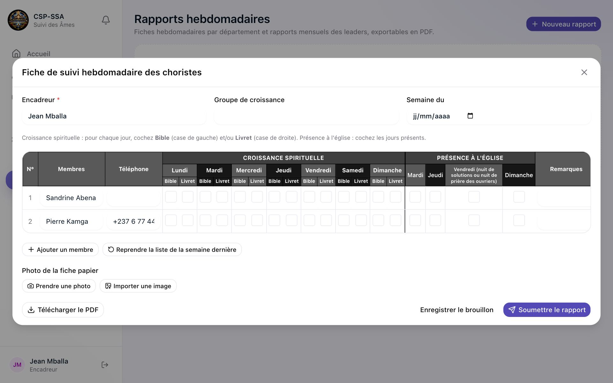
2.4Le rapport de la chaîne de prière (Intercession / Prière)
Différent du rapport de cellule : il recense qui a prié chaque soir de la chaîne, par catégorie (Pasteurs, Ministres & leaders, Membres, non connectés), avec le score de chacun (2/3…) et le total par soir.
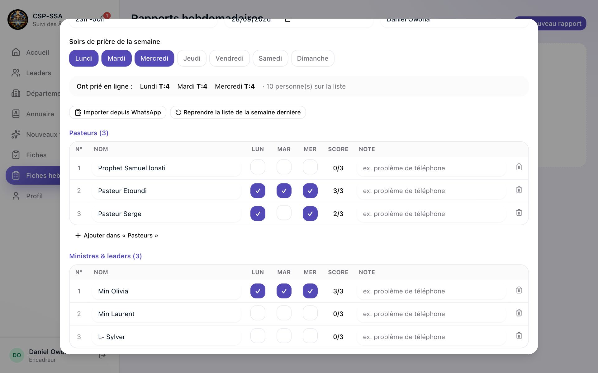
Fiches hebdo, puis Nouveau rapport, puis Rapport de la chaîne de prière, puis Remplir manuellement.
Vérifiez la tranche horaire (23h - 00h), la semaine du et les soirs de prière (lundi, mardi et mercredi par défaut).
Première fois : touchez Importer depuis WhatsApp et collez le dernier rapport publié dans le groupe. Les noms se rangent tout seuls dans les bonnes catégories. Les semaines suivantes :Reprendre la liste de la semaine dernière.
Pour chaque soir, cochez les personnes qui ont prié. Le score (2/3) et le total du soir (« Lundi T:25 ») se calculent seuls. Ajoutez une note si besoin (« problème de téléphone »).
Touchez Soumettre le rapport. Pour le groupe, touchez Copier pour WhatsApp : le rapport est copié dans le format habituel, prêt à coller.
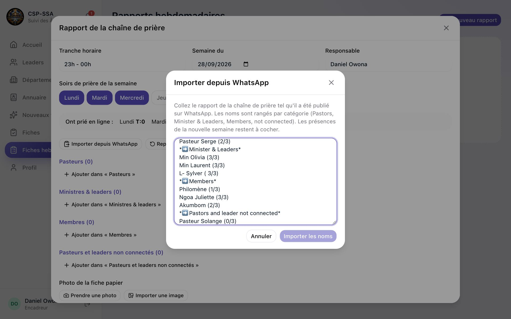
Importer la liste depuis WhatsApp
Un rapport où personne n'est coché est refusé (« La fiche est vide »). Pour une personne qui n'a pas pu se connecter, laissez les cases vides et indiquez la raison dans la note.
Partie 3
Faiseur de Disciples (Suivi)
Vous intégrez les nouveaux venus et les accompagnez dans les 7 leçons. Vous voyez tout l'annuaire de l'église, pour vérifier qu'une personne n'est pas déjà suivie ailleurs.
3.1Nouveaux venus et 7 leçons
La liste et la progression
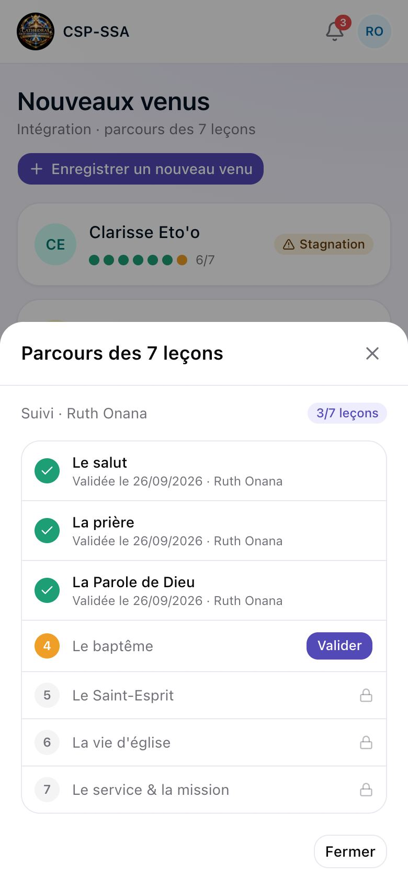
Valider une leçon
Menu Nouveaux venus, puis Enregistrer un nouveau venu : prénom, nom, téléphone, zone de résidence, date de première présence. Cochez Visiteur si la personne est de passage.
Touchez une personne pour voir ses 7 leçons. Après chaque leçon suivie, touchez Valider : la date et votre nom sont enregistrés.
Les 7 leçons validées, touchez Passer en membre régulier.
Une personne sans progrès depuis 2 semaines déclenche une notification « Stagnation d'un nouveau venu ».
3.2La Fiche des Encadreurs
Chaque ligne associe une âme à son Faiseur de Disciples. À la soumission, l'âme est automatiquement ajoutée à l'annuaire, sans doublon, et rattachée au faiseur choisi.
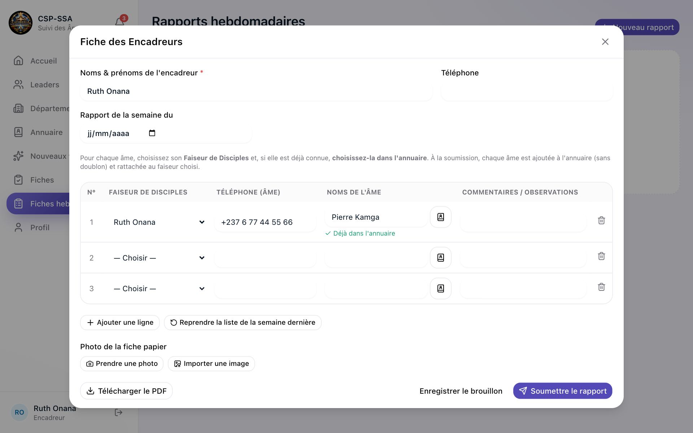
Dans Fiches hebdo, créez une Fiche des Encadreurs et choisissez Remplir manuellement.
Colonne Faiseur de Disciples : choisissez la personne dans la liste. S'il n'a pas de compte, choisissez Autre (saisir le nom).
Si l'âme est déjà connue, touchez le bouton carnet à côté de Noms de l'âme, cherchez-la et touchez Choisir. La mention « Déjà dans l'annuaire » apparaît. Sinon, tapez son nom et son téléphone.
Ajoutez vos commentaires, puis touchez Soumettre le rapport. Le message de confirmation résume ce qui a été fait : âmes ajoutées, rattachées à leur faiseur, déjà suivies.
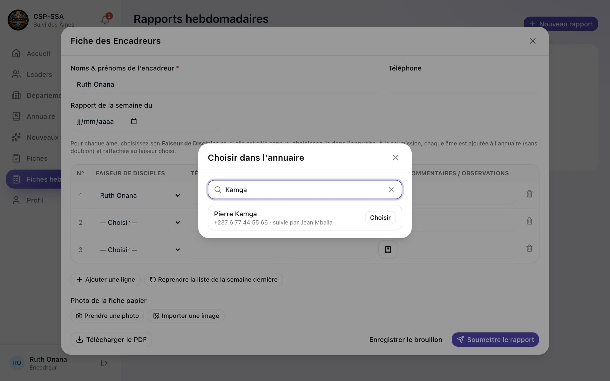
Choisir une âme dans l'annuaire
Règles importantes
• Une ligne où seul le faiseur est rempli ne compte pas : il faut au moins une âme (ou un commentaire).
• Sans faiseur choisi, une âme déjà suivie par quelqu'un d'autre ne change pas de faiseur.
• Seuls les Faiseurs de Disciples, le Pasteur, la PR et la Secrétaire peuvent déplacer l'âme d'un autre faiseur.
Partie 4
Leader
Vous êtes responsable de membres et d'encadreurs. Vous validez leurs fiches et remettez chaque mois un rapport au Pasteur. Vous remplissez aussi votre propre fiche de présence (voir 2.2).
4.1Votre accueil : membres et encadreurs
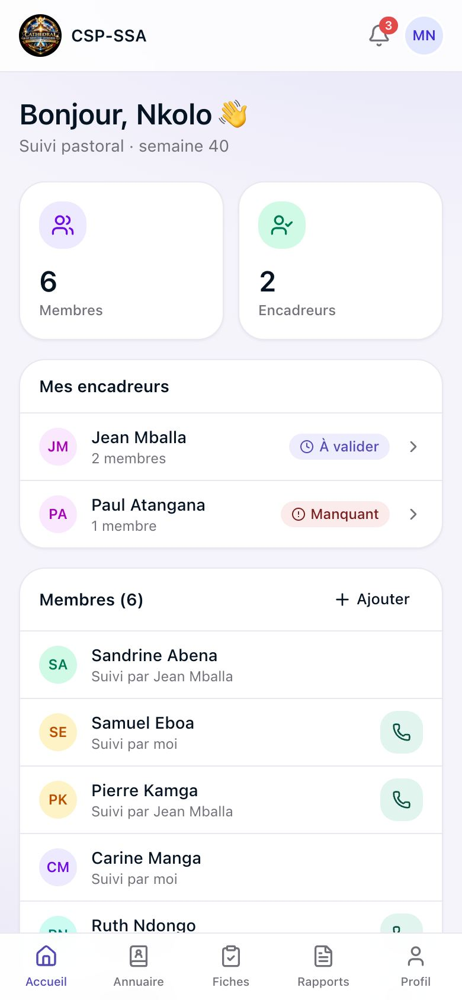
Membres et Encadreurs : le nombre de personnes dont vous êtes responsable.
Mes encadreurs : chaque encadreur avec son nombre de membres et l'état de sa fiche de la semaine (À valider, Manquant, Validé). Touchez un nom pour voir sa fiche complète.
Membres : tous les membres suivis, les vôtres (« Suivi par moi ») et ceux de vos encadreurs, avec le bouton pour appeler.
Ajouter : ajoute un membre directement dans votre liste (voir 2.1).
Les encadreurs qui dépendent de vous sont rattachés à votre nom par la PR ou le Pasteur. Si un encadreur manque dans votre liste, demandez-leur de le rattacher à vous.
L'annuaire de votre département
Menu Départements, puis votre département : les leaders, les encadreurs et tous les membres du département, avec recherche et appel.
4.2Valider les fiches ou demander une correction
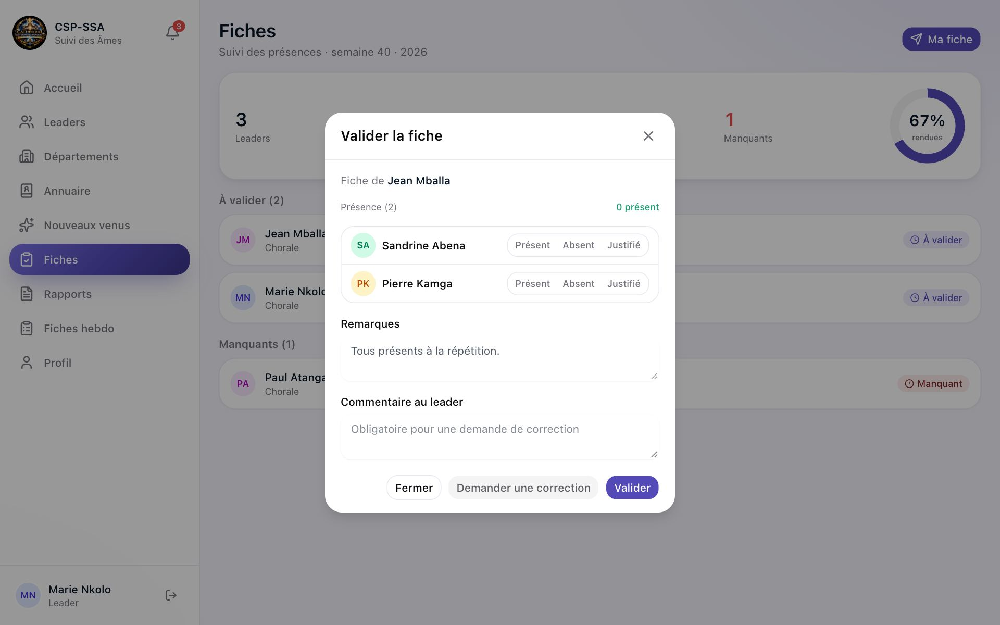
Onglet Fiches : la section À valider liste les fiches soumises par votre équipe.
Touchez un nom : la fiche s'ouvre avec la présence de chaque membre.
Si tout est juste, touchez Valider.
Sinon, écrivez ce qu'il faut revoir dans Commentaire au leader (obligatoire), puis Demander une correction. L'encadreur est prévenu.
Vous ne pouvez pas valider votre propre fiche : c'est un autre leader du département, le Pasteur ou la PR qui la valide.
4.3Relancer en un geste
Sur l'Accueil et dans Leaders, à côté d'une personne en retard, deux boutons : message (WhatsApp s'ouvre avec un rappel déjà écrit) et téléphone (appel direct).
4.4Le rapport mensuel au Pasteur
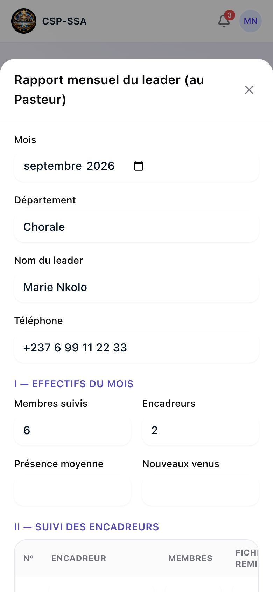
Dans Fiches hebdo, choisissez Nouveau rapport, puis Rapport mensuel du leader (au Pasteur).
Le mois, votre département, votre nom, le nombre de membres et d'encadreurs sont déjà remplis. Le tableau Suivi des encadreurs liste votre équipe.
Complétez : présence moyenne, nouveaux venus, fiches remises par encadreur, puis le Bilan du mois (activités, difficultés, besoins et sujets de prière, projets).
Touchez Remettre au Pasteur. Le Pasteur reçoit une notification.
À partir du 25 du mois, une notification vous rappelle de remettre votre rapport s'il ne l'est pas encore.
Les rapports (synthèses)
Menu Rapports, puis Nouveau rapport : rédigez une synthèse libre, pré-remplissable à partir des fiches, puis Transmettre. Un rapport transmis ne se modifie plus.
Partie 5
Leader de cellule
Vous animez une cellule de prière de quartier. Ses membres ne sont pas forcément membres de l'église.
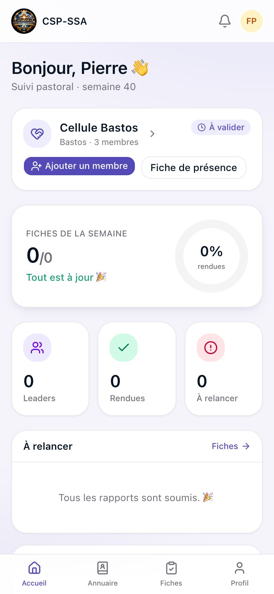
Votre cellule dès l'Accueil
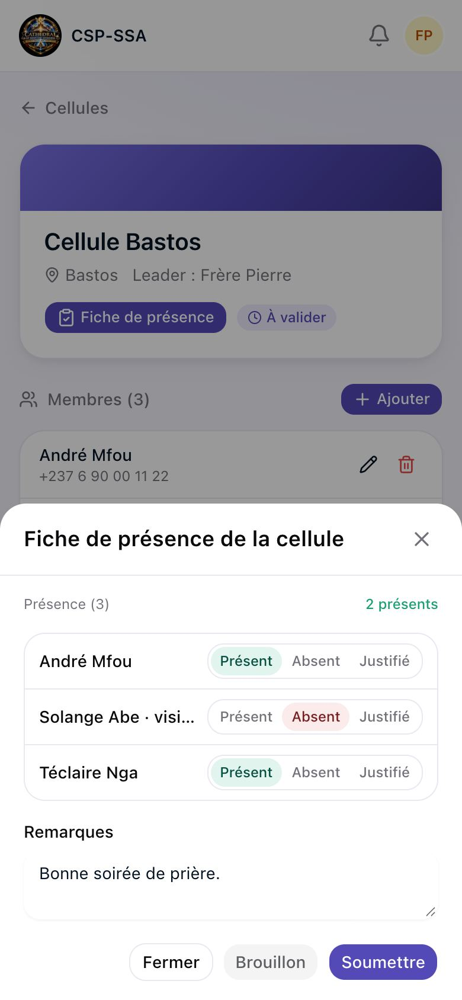
La fiche de présence
Dès l'Accueil : votre cellule, l'état de la fiche de la semaine et le bouton Ajouter un membre. Pour tout le reste, touchez le nom de la cellule (ou menu Cellules).
Membres : Ajouter (nom, téléphone, membre de l'église ou non). Le crayon modifie un membre, la corbeille le retire.
Chaque semaine : Fiche de présence, pointez chaque membre (Présent, Absent, Justifié), puis Soumettre. Une fiche incomplète est refusée ; Brouillon permet de finir plus tard.
Le Pasteur ou la PR valide ensuite la fiche.
Vous pouvez aussi remplir le Rapport de cellule de prière (assiduité et évangélisation) dans Fiches hebdo. Le nom de la cellule et le vôtre y sont repris automatiquement d'une semaine à l'autre.
Partie 6
Pasteur, PR et Secrétaire du pasteur
Vous voyez toute l'église. Le Pasteur et la PR administrent : comptes, départements, validation. La Secrétaire du pasteur consulte tout, sans rien modifier.
6.1Tableau de bord et objectif d'évangélisation
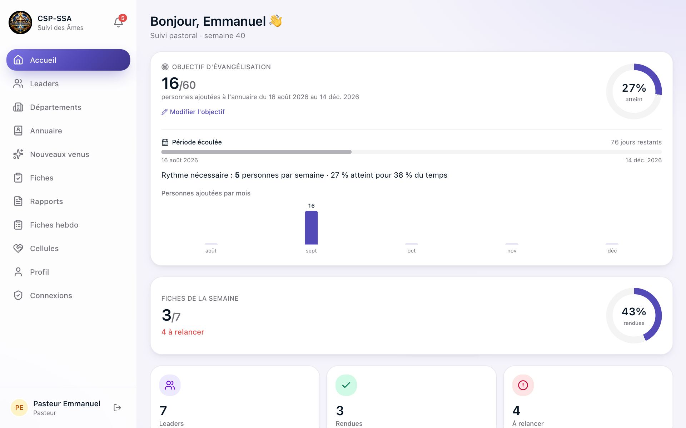
Fiches de la semaine : combien sont rendues, combien sont à relancer, avec la liste des retards et la soumission par département.
Objectif d'évangélisation (Pasteur uniquement) : touchez Modifier l'objectif et indiquez le nombre de personnes à atteindre, la date de début et la date de fin.
Comment l'objectif est calculé : ce sont les personnes ajoutées à l'annuaire entre la date de début et la date de fin, pas le total de l'annuaire. La carte montre aussi le temps écoulé, les jours restants, le rythme nécessaire (personnes à ajouter par semaine) et les ajouts mois par mois.
6.2Créer et gérer les comptes
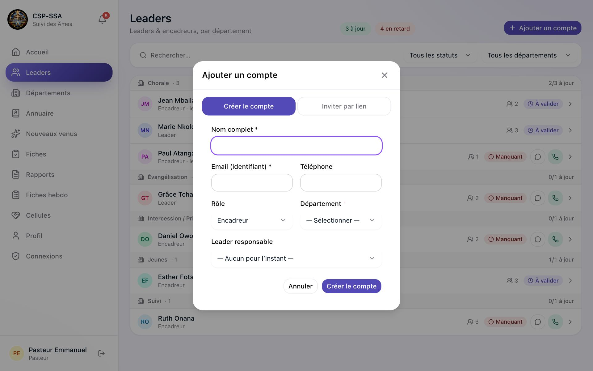
Menu Leaders, puis Ajouter un compte. Deux façons :
Créer le compte : saisissez le nom, l'email, le téléphone, le rôle et le département. Pour un encadreur, choisissez aussi son leader responsable. L'application affiche un mot de passe provisoire, une seule fois : envoyez-le avec Envoyer par WhatsApp ou Copier le message.
Inviter par lien : saisissez l'email, le rôle et le département. Envoyez le lien (WhatsApp, SMS, copier). La personne choisit elle-même son nom, son téléphone et son mot de passe. Le lien est valable 7 jours, pour une seule utilisation. Les invitations en attente peuvent être révoquées (croix rouge).
Sur la fiche d'un compte :
Leader responsable (pour un encadreur) : changez-le dans la liste. L'encadreur passe alors dans l'équipe du nouveau leader.
Désactiver : la personne ne peut plus se connecter, mais son historique est conservé. Réactiver rétablit l'accès.
Seul le Pasteur peut créer un compte PR ou Secrétaire. Un département peut avoir plusieurs leaders : chacun a ses propres encadreurs.
6.3Départements
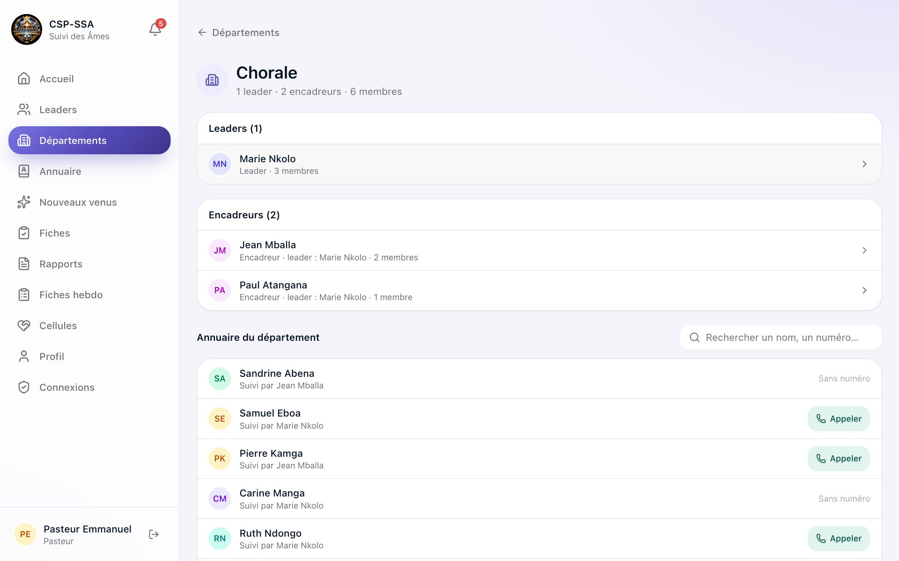
Menu Départements : les 13 départements, avec le nombre de leaders et de membres et l'avancement des fiches de la semaine. Touchez-en un pour voir son annuaire : leaders, encadreurs (avec leur leader) et tous les membres. Nouveau département et le crayon permettent de créer ou renommer un département.
6.4Rapports et fiches reçues
Menu Rapports : les synthèses transmises par les leaders, puis la section Fiches hebdomadaires soumises. Ouvrez une fiche pour la lire, voir les photos de la fiche papier et Télécharger le PDF. Les rapports mensuels des leaders y figurent aussi. Chaque fiche soumise vous envoie une notification.
6.5Cellules et nouveaux venus
Cellules : créer une cellule, lui attribuer un leader de cellule (Leaders, puis Inviter un leader) et valider les fiches de cellule. Nouveaux venus : suivre l'intégration de toute l'église.
6.6Journal de connexions
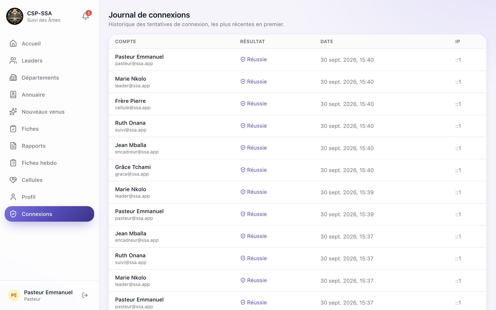
Menu Connexions (Pasteur et PR) : toutes les tentatives de connexion, réussies ou échouées, les plus récentes en premier. Utile pour repérer un compte dont quelqu'un cherche le mot de passe.
Secrétaire du pasteur : vous avez accès en lecture à l'annuaire complet, aux leaders, aux départements et à toutes les fiches. Les boutons de création, de validation et de désactivation ne vous sont pas proposés.
Partie 7
En cas de problème
Les situations les plus fréquentes, et quoi faire.
« Identifiants invalides »
L'email, le numéro ou le mot de passe est incorrect. Vérifiez les majuscules. Ensuite, utilisez Mot de passe oublié ? ou demandez un nouveau mot de passe à la PR.
« Trop de tentatives. Réessayez dans quelques minutes. »
Après 5 erreurs, le compte est bloqué 15 minutes. Attendez, puis réessayez.
Le lien d'invitation ne marche plus
Il est valable 7 jours et ne sert qu'une fois. Demandez une nouvelle invitation.
« Serveur injoignable » ou « Impossible de joindre le serveur »
Le réseau est coupé ou trop faible. Vérifiez vos données mobiles ou le Wi-Fi, puis touchez Réessayer. Vous n'êtes pas déconnecté.
« Réponse inattendue du réseau (code …) »
Le réseau a renvoyé autre chose que l'application (portail opérateur, forfait épuisé…). Réessayez dans un instant ou changez de connexion. Si cela persiste, transmettez le code affiché.
« Fiche incomplète » ou « Aucun membre à pointer »
Pointez chaque membre avant de soumettre, ou ajoutez d'abord vos membres (voir 2.1). Un brouillon peut rester incomplet.
« La fiche est vide »
Ajoutez au moins une information de la semaine, ou une photo de la fiche papier.
« Doublon possible : ce numéro est déjà enregistré »
La personne existe déjà. Rattachez-la plutôt que d'en créer une seconde.
« Chiffres uniquement » sous un téléphone
Le numéro contient une lettre ou un symbole. Seuls les chiffres, les espaces, un « + » au début et une précision entre parenthèses sont acceptés.
Je ne vois pas un menu ou un bouton qu'un collègue voit
C'est lié à votre rôle (tableau « Qui voit quoi ? »). Si c'est une erreur de rôle ou de département, demandez à la PR de corriger votre compte.
Un encadreur n'apparaît pas dans mon équipe
Il n'est pas encore rattaché à vous. La PR ou le Pasteur le rattache depuis sa fiche (Leader responsable).
Je ne reçois pas les notifications
Activez-les dans Profil sur chaque téléphone. Sur iPhone, ouvrez l'application depuis son icône installée. Si le téléphone les a bloquées, réautorisez-les dans ses réglages.
L'application affiche une ancienne version
Fermez-la complètement, puis rouvrez-la.
Pour toute question sur votre compte ou vos droits, adressez-vous à la PR. Pour un problème technique persistant, notez le message affiché, l'heure et le téléphone utilisé, et transmettez-les à l'équipe technique.